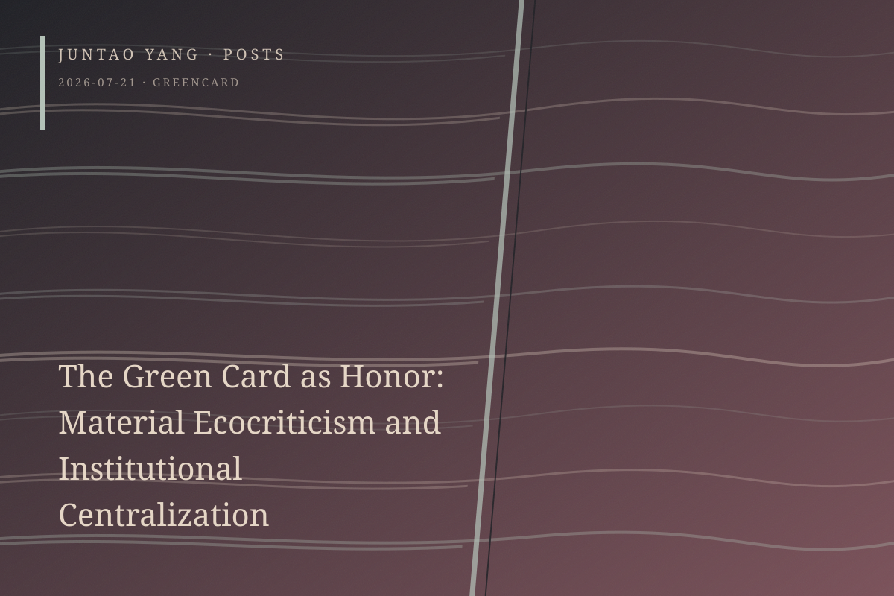

<content>
I am a fairly mean-spirited person, and one who rarely accords academic professionalism any special reverence. I have a taste for jokes that flirt with the scandalous. Lately I have been sharing one such comic moment with friends: Serenella Iovino, a chaired professor at the University of North Carolina at Chapel Hill and a prolific scholar of ecocriticism, actually lists her EB-1B green card under “Honors” on her CV. Of course this is not to deny that it is an enormous achievement, especially given her decision to resign from several positions in Italy and commit herself to the American academy after the Obama years. Seen from the Trump era, however, this conspicuous display of an academic worker’s dependence on immigration bureaucracy—and, beyond it, on an entire Anglo-American centrism—is at once funny and painful.
Before moving into an institutional critique, I want to stay with the contradiction. It has much in common with the unspoken mixture of delight and misgiving with which many of us receive material ecocriticism. Material ecocriticism has long prided itself on being a genuinely decentering project: it reads the material world as a text written by material processes, and its nonanthropocentric claim is that human beings are no longer the only narrators. The appeal is undeniable. The difficulty begins when matter is said to possess agency. Is this an epistemological claim—that we can read material processes as we read texts—or an ontological one—that matter itself tells stories? Iovino and others move continually between these two levels.
Paul Rekret describes the fallacy as the use of an ethical-aesthetic posture to finesse an ontological problem: epistemic and ethical humility, or an attunement to matter, seems to promise ontological access, while the conditions under which thought gains access to the world are set aside. Iovino, for her part, has even described her method quite candidly as a form of strategic anthropomorphism. Yet if the strategist is human, the story is told in human language, and its circulation takes place within human institutions, does the professed decentering not become a thoroughgoing recentering? Finally, on the matter of attribution and responsibility, this approach can certainly offer the surprise of what Eve Kosofsky Sedgwick calls reparative reading. It can also too readily abandon ecocriticism’s other pole—a paranoid and suspicious hermeneutics—and digest political consequences into flatness.
Iovino’s CV may carry an analogous structural risk. By placing American permanent residency among her honors, she inadvertently exposes the American research university as a key apparatus of legitimation for the humanities since poststructuralism. The English-language publishing system in the United States, recognized professional associations, and the tenure-and-promotion regime have become highly centralized institutional interfaces for the global humanities, even as the names of their authors are transliterated from many languages. Here we encounter the centralism within material ecocriticism’s promise of decentering: a posture that proclaims decentralization at the level of theory while embracing centralization in institutional practice. Marginalized languages and stories must first be translated into authorized languages and authorized stories.
Meanwhile, just as flat ontology can obscure political attribution, the structural inequality of academic discourse is obscured by a Braidottian mythology of nomadic mobility. An honor conferred by an immigration bureaucracy becomes homologous with a nonhumanist aesthetic posture.
</content>
July 21, 2026
The Green Card as Honor: Material Ecocriticism and Institutional Centralization
A green card listed among academic honors unexpectedly exposes the institutional centralization that material ecocriticism disavows at the level of theory.
